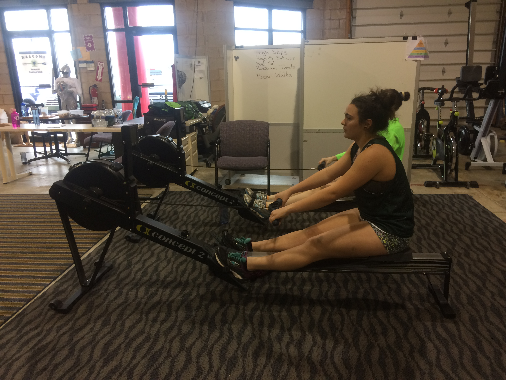
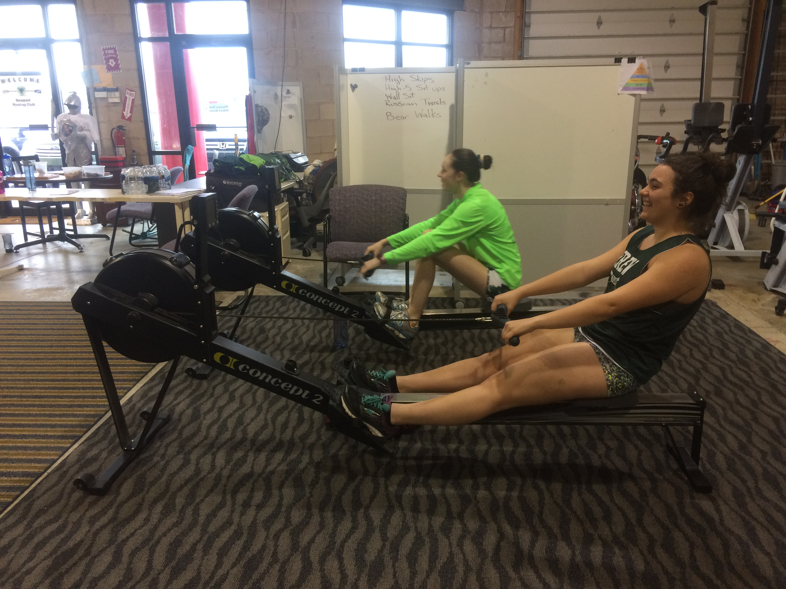
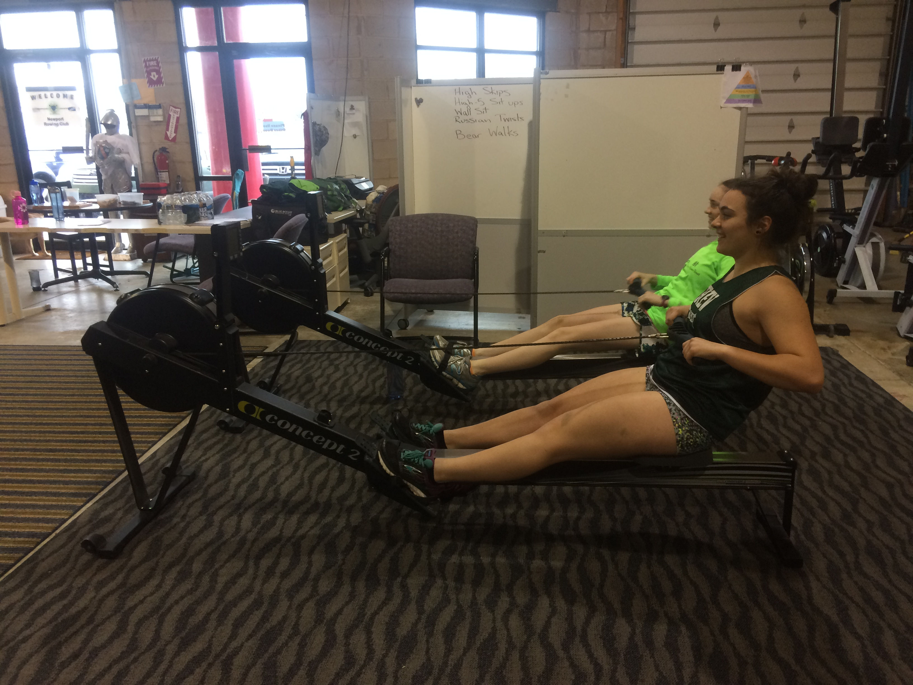

Parts of the Rowing Stroke
Rowing machines are very useful as workout tools when used properly. Rowing machines allow you to strengthen your core, legs, arm, and back muscles; however, in order to have an effective workout, you need to use the rowing machine correctly. Moving your body in the correct sequence is vital for a successful and safe workout on a rowing machine.
The Drive
STEP 1: Get into the starting position. The starting position for rowing is known as "the catch." To get into the catch, bend your knees until your body is near the handle at the front of the machine. Grab the handle securely with both hands. Make sure your back is straight.

STEP 2: Push off the foot plate with your leg muscles. When using a rowing machine, you're moving one body part at a time — start with the legs.When you push off the foot plate, you will be using your quads and glutes to extend your legs. Do not make the mistake of using your full-body all at once during this exercise. Rowing properly means you are progressing from using your legs, then your core, then your arms in succession — not all at once in a single full-body move.
STEP 3: Lean back into a 45 degree angle. Once your legs are straightened out, use your core and hamstrings to lean back to a roughly 45 degree angle, keeping your spine straight. Your core muscles keep the pelvis and upper torso locked together — this will stabilize your back, preventing movement along the spine which could lead to injury.
STEP 4:Once your legs are straight and your back is tilted, you can practice including the arm movements. Your core will remain engaged, holding your torso at a 45 degree angle as you pull the handle toward your chest. Bend your elbows in order to pull the handle towards your chest.Pull the handle inward until it touches just below your chest.This move will cause your latissimus dorsi to contract to stabilize the shoulder, the deltoids and triceps contract to pull the elbow back and the handle towards the sternum.
The Recovery
STEP 5: Extend your arms . You will now begin to return to starting position, following the reverse sequence of movement — arms, core, legs. Extend your arms from your chest.
STEP 6: Reaching your torso forward. Continue to return to starting position, following the reverse sequence of movement — arms, core, legs. Tilt your torso forward out of the 45 degree angle at the hips.
STEP 7: Bend your knees to return to the starting position. Keep bending your knees until you're back in the original position. You should have your knees bent and your body close to the front of the machine, with your hands firmly grasped around the handle. You can now do the movement again.
Click here for further instruction